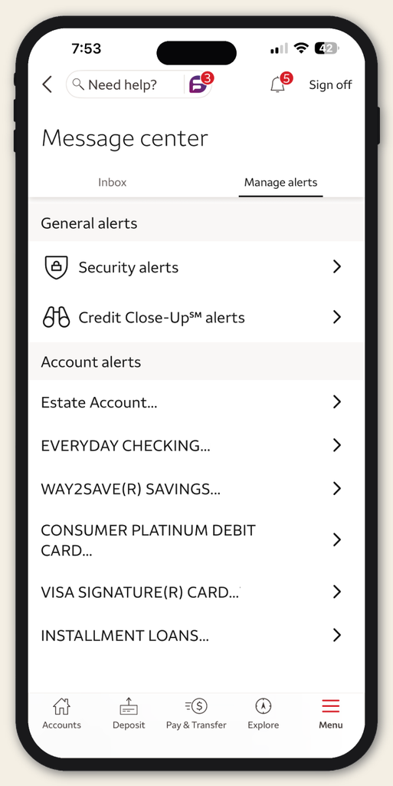

Security Center

The Wells Fargo Security Center allows customers to manage security settings, learn best practices, and avoid scams.
Learn More
The Wells Fargo Security Center allows customers to manage security settings, learn best practices, and avoid scams.
Learn More
Wells Fargo manages account notifications through the Manage Alerts feature within online and mobile banking, allowing customers to track transactions, low balances, and security events via push notifications, email, or text messages.
Learn More
Wells Fargo Trust Services provide fiduciary management, asset administration, and estate settlement, acting as a corporate trustee across all 50 states. Key offerings include trust and estate planning, special needs trust management, and philanthropic solutions.
Learn More